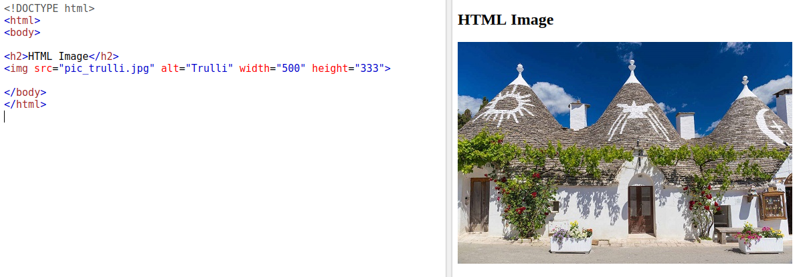
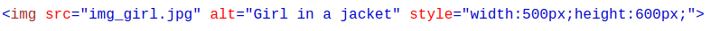
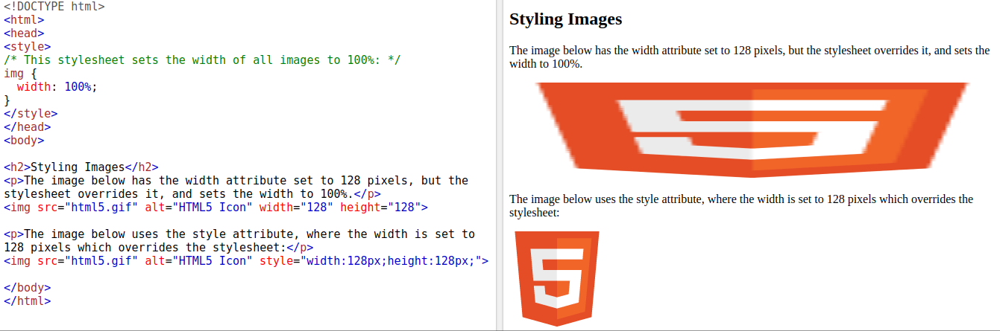
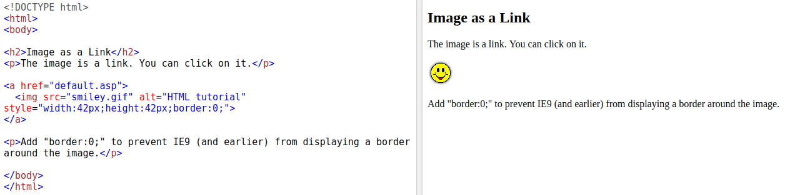
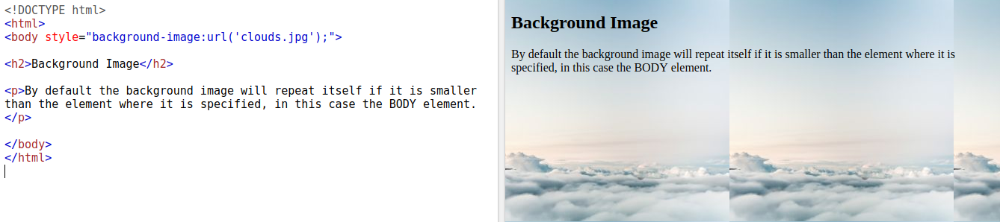
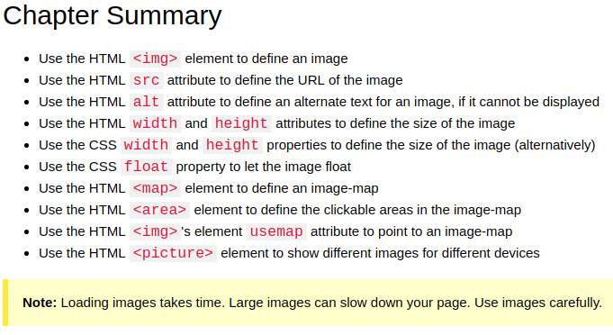
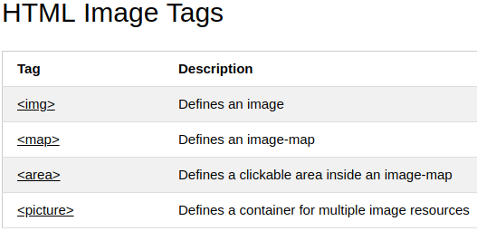

(1) HTML Image
(2)Image Size - Width and Height
You can use the style attribute to specify the width and height of an image.
Alternatively, you can use the width and height attributes:
Note: Always specify the width and height of an image. If width and height are not specified, the page might flicker while the image loads.
(3) Width and Height, or Style?
The width, height, and style attributes are valid in HTML. However, we suggest using the style attribute. It prevents styles sheets from changing the size of images
(4) Images on Another Server
Some web sites store their images on image servers. Actually, you can access images from any web address in the world:

(5) Image as a Link
To use an image as a link, put the < img> tag inside the < a> tag:
(6) Image Floating

(7) Background Image
To add a background image on an HTML element, use the CSS property background-image:
(8) The HTML < picture> Element
HTML5 introduced the < picture> element to add more flexibility when specifying image resources. The < picture> element contains a number of < source> elements, each referring to different image sources. This way the browser can choose the image that best fits the current view and/or device. Each < source> element have attributes describing when their image is the most suitable. The browser will use the first < source> element with matching attribute values, and ignore any following < source> elements.

Note: Always specify an < img> element as the last child element of the < picture> element. The < img> element is used by browsers that do not support the < picture> element, or if none of the < source> tags matched.
Try it yourself >>
